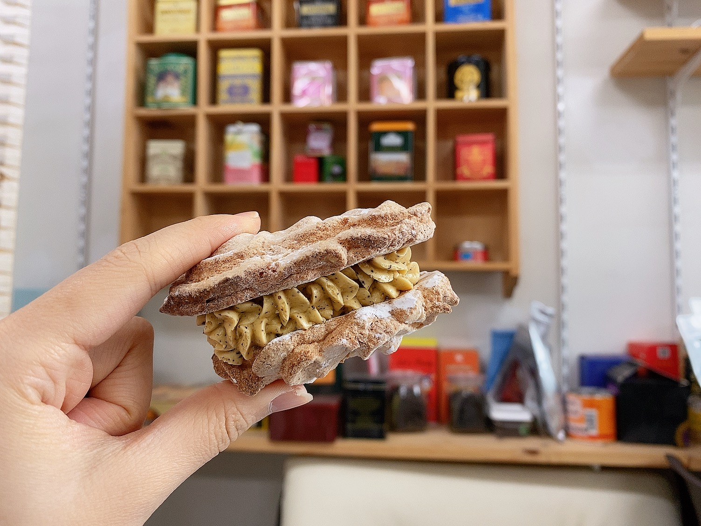

홍작 활동
홍작은 월간 정기 살롱 세션과 월간 비정기 티하우스 탐방 및 외부 차체험
그리고 부원 간 자유로운 다회 소모임 진행을 주요 활동으로 하고 있다.
이와 더불어 20년도 하반기부터 학기별 홍작 문집을 제작하고 있으며
홍차에 대한 학술적 고찰, 역사적 배경, 비교문화적 연구는 물론 다구 소개와 개별 차에 대한 설명을 실어
동아리 활동이 종료한 이후에도 차를 즐길 수 있도록 장려할 계획이다.
홍차의 역사와 가향원리에 대한 설명을 읽으며 부원들이 혼자서도 향긋한 티타임을 즐기길 바란다.
월간 정기 살롱 세션에서는 스트레이트티를 우리는 방법, 밀크티 제작방법, 홍차시럽 제조방법 등을 함께 배울 예정이며
매 세션마다 시음기를 작성하여 기록할 계획이다. 정기 살롱세션의 진행은 매 학기마다 홍차를 사랑하는 기존 부원들이
자신의 노하우를 전하는 방식으로 운영되어왔고 졸업생 선배들의 팁을 실습해 보는 세션또한 11월에 예정되어 있다.
비정기 티하우스 탐방 세션 때는 한국지점이 있는 영국 홍차 브랜드의 플래그쉽 스토어 (잠실 베질루르, 청담 위타드 등)과
신촌 일대의 유서 깊은 티하우스들을 탐방하며 국내 홍차 음용 문화를 체험하고
전문가들로부터 홍차를 즐기는 방법을 배우는 시간을 갖는 것이 목적이다.
동아리 내 예약제로 운영되어 왔다.
이외에도 홍차를 매개로 한 살롱이라는 콘셉트에 부합하게 동아리방에서 이루어지는
다회 소모임도 장려할 예정으로 부원들이 자율적으로 정해진 시간에 구애받지 않고
언제든지 동아리방에 우연하게 들러서 우연하게 만난 부원들과 차를 즐기도록 프로그램을 기획하였다.
